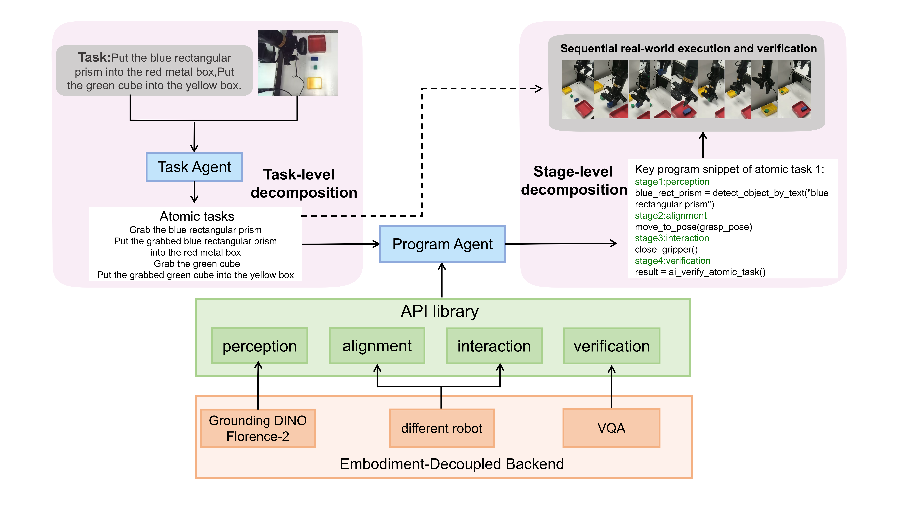

Dual-layer decomposition
Complex instruction to atomic tasks, then each atomic task to perception, alignment, interaction, and verification.
Real-world robot manipulation | PiPER arm | dual-view RGB-D
Hierarchical Program-Aided Framework for turning a long-horizon language instruction into API-grounded Python programs, real robot execution, and verification-gated progress.
Project overview
HPAF decomposes a complex tabletop instruction into ordered atomic tasks. For each atomic task, a ProgramAgent synthesizes a short executable program over a small robot API library, then the system executes the program on a real PiPER arm and checks whether the task is complete before moving forward.
The current prototype connects a TaskAgent, ProgramAgent, foundation-vision perception, PiPER robot backend, organized run logging, and human or AI-assisted verification.
Complex instruction to atomic tasks, then each atomic task to perception, alignment, interaction, and verification.
LLM output is constrained to executable Python built from registered robot capabilities rather than free-form plans.
Every attempt records generated code, perception artifacts, pose estimates, and verification outputs for inspection.
Framework diagram

Demo video
The demo uses a PiPER arm, an eye-in-hand RGB-D stream for precise grounding, and a secondary global view for scene understanding and completion checking.
The source video is a portrait recording, so the page keeps it in a 9:16 player. The web copy is encoded as H.264 with a poster frame to keep playback compatible with GitHub Pages and common desktop browsers.
Logged run
"Put the blue rectangular prism into the red metal box. Put the green cube into the yellow box."
Latest selected run: 2026-04-16, 4 atomic tasks. The human verification log marks all four atomic tasks complete, while AI verification artifacts are saved for automated checking and future comparison.
Detect the object, estimate a top grasp pose, close the gripper, retreat, and return to observe pose.
Human verifiedLocalize the red box, compute a placement pose inside the target region, release, and verify.
Human verifiedReuse the same generated grasp structure with a different object query and pose estimate.
Human verifiedSwitch from grasping to placement APIs while preserving the same verification-gated flow.
Human verifiedGenerated code
The ProgramAgent is only allowed to call registered runtime APIs such as
detect_object_by_text, estimate_top_grasp_pose,
move_to_pose, and ai_verify_atomic_task.
debug("Starting detection of target blue rectangular prism")
blue_prism = detect_object_by_text("blue rectangular prism")
grasp_pose = estimate_top_grasp_pose(blue_prism)
pregrasp_pose = build_pregrasp_pose(grasp_pose)
open_gripper()
move_to_pose(pregrasp_pose)
move_to_pose(grasp_pose)
close_gripper()
stabilize_grasp()
retreat()
return_to_observe_pose()
result = ai_verify_atomic_task()